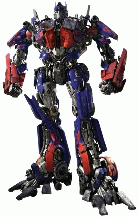

Óptimo
 De: La Frikipedia, la enciclopedia extremadamente seria.
De: La Frikipedia, la enciclopedia extremadamente seria.
Entre programadores, trabajadores informáticos y noobs, adjetivo calificativo utilizado para recalcar el estado de excitación resultante de la verificación de que, en un trabajo próximo a entregar, no anda nada, y probablemente no se pueda cumplir ninguno de los objetivos originalmente planificados ni en tiempo ni forma ni en nada.
Historia
En la Mitología Celta, es altamente reconocido el Dios "Optimus" o Dios de la negación 
El Dios Optimus en una de sus últimas encarnaciones
Ficha técnica: Dios Óptimus
- Néctar Vital: Té de Floripondio. Por alguna extraña razón que actualmente es desconocida, el intensivo consumo de dicha infusión, parece ser su principal si no único alimento. Se supone que le es necesario para poder manejar el nivel de caos al que suele estar expuesto y no perecer en el intento.
- Enemigo Principal: El Dios "Eficacio", quien cumple lo que promete y realiza los procedimientos correctos en todos sus trabajos. Sin embargo, este Dios no ha dado pruebas fehacientes de su existencia en el plano de los mortales, por lo que no pasa de ser un mito urbano. De cualquier manera, si apareciera en esta dimensión, probablemente escaparía del Dios Óptimus con todas sus fuerzas, para evitar ser mediocrizado vilmente.
- Arma de defensa: Al exclamar su grito característico: ¡Óptimo! produce en su enemigo un estado de desorientación que lo deja entre extrañado y alegre, vulnerable ante cualquier ataque. Es ahí donde arremete expresándose casi completamente con diminutivos y palabras de entusiasmo, dejando a su víctima casi vencida. Finalmente, ante la evidente falta de coherencia en sus palabras, y ante su constante negación de cualquier problema que pudiera presentarse, sus enemigos enloquecen volviéndose personas agresivas e intolerantes y terminan internados en hospitales psiquiátricos. Otra de sus conocidas armas de defensa, son sus ridículas analogías frente a una situación que de por sí es estúpida. Usualmente, dichas analogías tienen componentes fuertemente sexuales, que confunden a su enemigo que finalmente olvidó el estúpido problema inicial.
- Encarnaciones: El Dios Óptimus se reproduce en numerosísimas encarnaciones, en toda época, cualquier lugar, y simultáneamente. En lo que va del siglo XXI, se ha comprobado su preferencia por las personalidades dedicadas al desarrollo de software, especialemente, por los directivos de empresas dedicadas a este rubro.
Sus adeptos
Entre los seguidores de Óptimus, quizás los más destacados sean los creadores y trabajadores de la empresa Microsoft. Quienes alguna vez visitaron sus instalaciones, destacaron el hecho de que en la empresa todo el mundo trabaja feliz, los programas salen en las fechas convenidas, y, si algo de lo que sale no funciona, la frase característica es "¿Y a mí qué?".
Sus técnicas
Óptimus no lleva a cabo sus acciones en forma azarosa. Por más incoherencia que aparente, cada palabra que exhala es producto elaborado de su compleja metodología para las relaciones interpersonales. Ésta consiste en esquivar una y otra vez los problemas y las indirectas planteadas por sus víctimas, para lograr así la el mencionado desconcierto.
Esto le ha servido a lo largo de la eternidad para dar solución a los problemas más complicados de la humanidad, paradójicamente proponiendo como solución no dar solución alguna.
Óptimus no conoce otras leyes que las que Él (él mismo) inventa, acordes a su conveniencia.
Modo de accionar: principios y ejemplos
Sus tácticas no son visibles a simple vista, pero numerosos estudios han arrojado ciertos resultados realmente asombrosos, permitiendo establecer que se destacan a continuación:
- Si se produce un resultado no deseado de cualquier tipo ante determinada situación, dicha situación ya no deberá tener lugar, sin importar la causa del problema o la necesidad de que esa situación se lleve a cabo.
Ej: Al apretar necesariamente el botón derecho del mouse en un programa (para acceder a una opción específica a la cual no es posible acceder mediante otro camino), se produce un error que cuelga Windows. La solución en este caso será no apretar el botón derecho del mouse nunca más. ¿Y la funcionalidad perdida?: bueno, eso ya no es problema de Óptimus.
- Si existe la posibilidad de enfrentarse a una situación incómoda en algún aspecto, lo mejor será evitarla, postergando el hecho. Esta postergación de los compromisos no requiere necesariamente de una justificación seria o incluso válida.
Ej: Un empleado pide un aumento de sueldo a su jefe Óptimus, obteniendo como respuesta un "mejor lo vemos dentro de un mes". Probablemente esta respuesta se repita al mes siguiente, o casualmente nunca exista un momento adecuado para entablar la negociación.
- Cuando sus sensores detecten que alguna tarea o decisión que debe tomar (usualmente relacionado con el ítem anterior), no es conveniente para SUS y únicamente sus intereses, procederá a utilizar hacia su interlocutor un intento barato de psicología inversa. Lo que hará es plantear una larga serie de razones lógicas para las cosas, se pondrá a hablar de otros temas derivados, y dará vueltas hasta que llegue al punto culminante que es cuando niega su intención de hacer exactamente lo que va a hacer.
Ej: "No quiero ni debo postergarlo un mes, pero lo voy a postergar un mes..."
Su homónimo
 El robot del mismo nombre
Como el lector puede predecir, Óptimus es portador del mismo nombre que el sensacional robot de Marte (Transformers para los incultos). Esto no es un dato menor, ya que en 1998 Optimus Prime denunció a Óptimus por robo de identidad. Luego de un interminable y polémico juicio, el juez llegó a una sola conclusión: "¡óptimo!". Así todo quedó en la nada por años, mientras el denunciante se resignó a vivir en un lavadero de autos de poco vuelo. Pero con la llegada de la película Transformers, se reavivaron las llamas de la pelea, y Optimus Prime volvió a elevar una denuncia. Actualmente no se ha resuelto la sentencia, dejando libres a ambos Óptimus para usar dicho nombre.
Autor(es):
- Aque
- Azulejos
- AnaP
- Pato
- Frikih
- Veni Vidi Vici
Frikipedia 2005-2016, Licencia
GFDL 1.2 - Extraído por FrikiLeaks